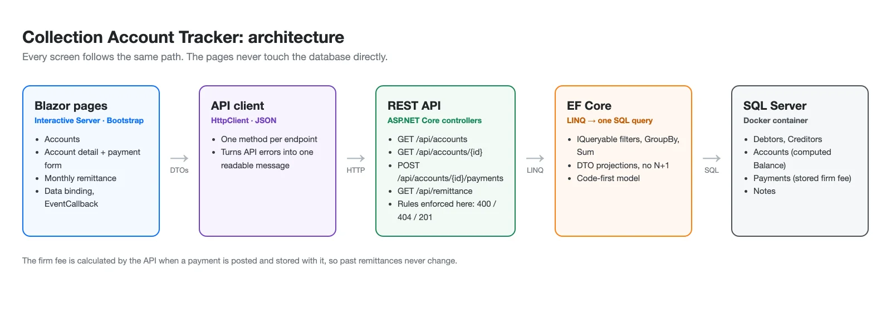
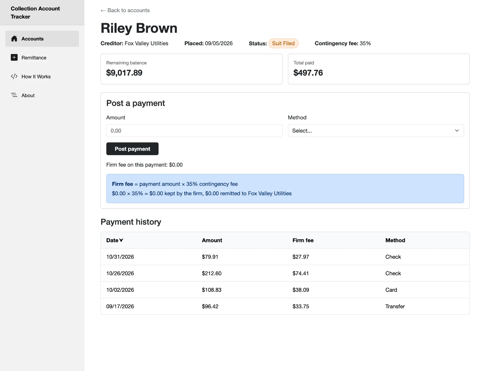
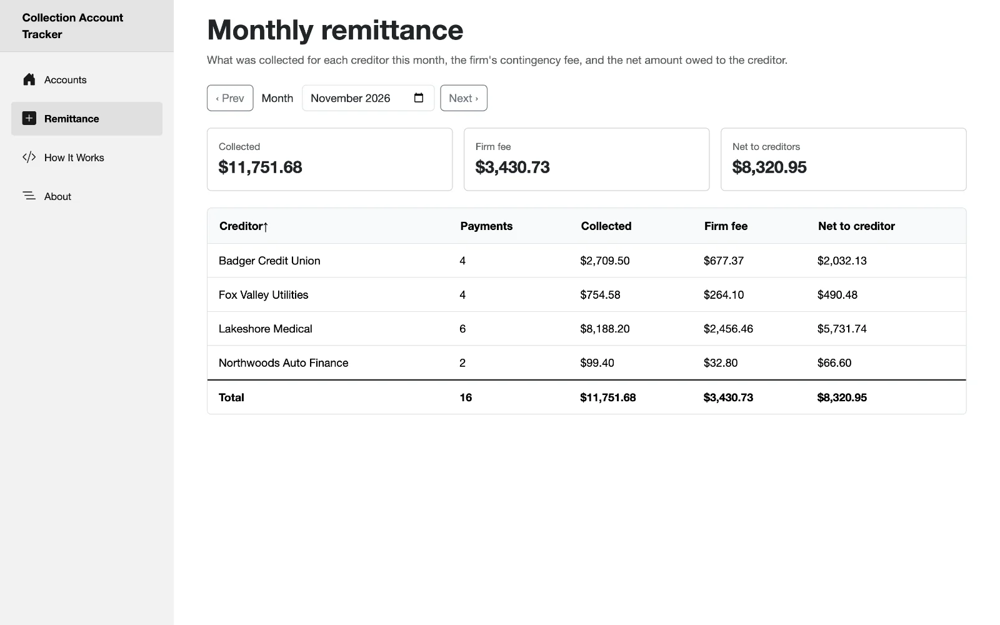
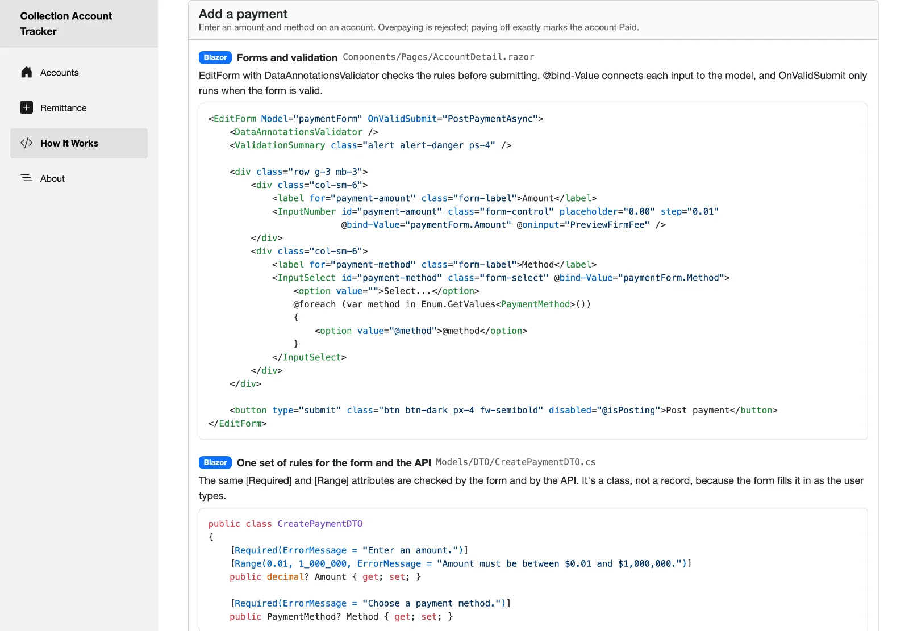

the why
why i built it
When someone pays off a debt through a collection law firm, the money doesn't all go to the business they owed. The firm keeps a percentage, called a contingency fee, and once a month sends each creditor what's left along with a report. Get the math or the month wrong and a creditor is underpaid, or a past report quietly changes.
I built this app for a job interview, to show I could move from ASP.NET Core MVC to Blazor in about a day of work. Modeling one real step of a law firm's process, posting payments and paying creditors, gave me a reason to use Blazor, LINQ and a REST API together the way a real business app would.
how it works
the guts
How it works
The app has three screens. Accounts lists every debt with search, a status filter and clickable summary cards. Account detail shows one account's history and lets you post a payment, with the firm's fee shown live as you type. Remittance shows, for any month, what was collected for each creditor, the firm's fee and the net owed.
Every screen follows the same path: a Blazor page calls a small API client, which calls my REST API, which uses EF Core and LINQ to query SQL Server running in Docker. The pages never touch the database directly. The app also includes a How It Works page that walks through each action (search, add a payment, the remittance report) and shows the real Blazor, REST and LINQ code behind it, pulled live from the source files.

Key decisions
- An API between the pages and the database. In Blazor Server the pages already run on the server, so they could use the database directly. I went through an API anyway, so the UI only deals with simple data objects, other systems could reuse the same endpoints, and the UI could move to WebAssembly later.
- The fee is stored on each payment, not recalculated. A remittance is a financial record. If a creditor's rate changes next year, last month's report must not change.
- The server enforces the rules. The form checks the basics, but the API is what rejects an overpayment, calculates the real fee and marks an account Paid, all saved together in one database transaction.
- The database does the heavy lifting. Filtering, grouping by creditor and totals all run as SQL, so only the rows a page needs come back. Every endpoint uses a fixed number of queries, however much data there is.
- Money is handled carefully:
decimalinstead of floating point, an explicit rounding rule for half-cents, and the fee math in one shared place used by the API, the seed data and the on-screen preview. - Bootstrap instead of custom CSS. Late in the project I replaced most of my own styles with Bootstrap's utility classes, which cut the custom CSS by more than half and made every screen consistent.
the hard parts
where it fought back
A helper method that compiled but broke the database queries
Problem: "Balance" (amount owed minus amount paid) appeared in five places in my API, so I moved it into a small C# helper method. It compiled, but sorting accounts by balance and adding up balances per status both failed when they ran.
What I tried: I had EF Core print the SQL it would generate for each query. It could handle the helper when building results, but not when sorting or summing, because it can't translate a C# method into SQL. Writing the subtraction out by hand worked, but meant repeating the same formula everywhere.
Fix: I made Balance a computed column that SQL Server calculates itself. Now it's defined once and works in every query, sort and total, and I checked the generated SQL for each endpoint to confirm it. The lesson I took away: code inside a database query has to be something the database understands.
The database container kept shutting down
Problem: SQL Server ran in Docker, but the container would start and then stop a few seconds later, so the app couldn't connect.
What I tried: Its logs showed the password I'd set was rejected as too weak, so SQL Server never finished starting. Fixing the password in my settings file didn't help at first, because SQL Server only reads that password the very first time it creates its storage, and the password in the app's connection settings didn't match it either.
Fix: I chose a password that met SQL Server's rules, started the container fresh so it picked up the new one, and made sure the app used the same password. I wrote the password rules into the README so the next person setting it up doesn't hit the same wall.
The grid ignored my styling
Problem: I wanted more breathing room in the table rows, but my padding had no effect. The rows stayed cramped no matter what I set.
What I tried: QuickGrid, the table component I used, ships its own stylesheet, and its rule was slightly more specific than mine, so the browser chose its padding. Making my rule more specific worked, but it was a workaround I'd have to repeat for every grid.
Fix: I turned off QuickGrid's built-in theme so all the grids use Bootstrap's standard table styles instead, defined once and shared everywhere. This was part of moving the whole app onto Bootstrap's utility classes.
the results
what came out of it
- Working app in 5 days (11/12–11/16/2026): three main screens, a code walkthrough page and an in-app demo checklist.
- 5 REST endpoints across 2 controllers, each tested with a ready-made request file that also covers the error cases (400 and 404).
- No N+1 queries: every endpoint runs a fixed number of database queries (one or two), which I confirmed by checking the SQL that EF Core generates.
- Custom CSS cut from 878 lines to 393 by moving the styling to Bootstrap's utility classes.
- Seeds 25 fake accounts with payments in the current and previous month, so the demo always has realistic data.



what i learned
notes to future me
- Blazor felt different from MVC in one big way: a page is a component that stays alive and updates only what changed, instead of a new page on every click. Two-way data binding replaced most of what I used to do with form posts.
- Code that compiles isn't always code the database can run. LINQ queries are translated into SQL, so I learned to keep anything inside a query to things SQL understands and do the rest after the data comes back.
- Some Blazor defaults have side effects. By default a page renders twice when it first loads, which called my API twice; turning that off made data loading simpler.
- In v2 I'd add database migrations, so the schema can change without rebuilding the database, plus a way to change an account's status, payment reversals for bounced checks, and sign-in with user roles.
- I'd also add automated tests around the fee calculation and the overpayment rule, since those are the parts where a mistake costs real money.